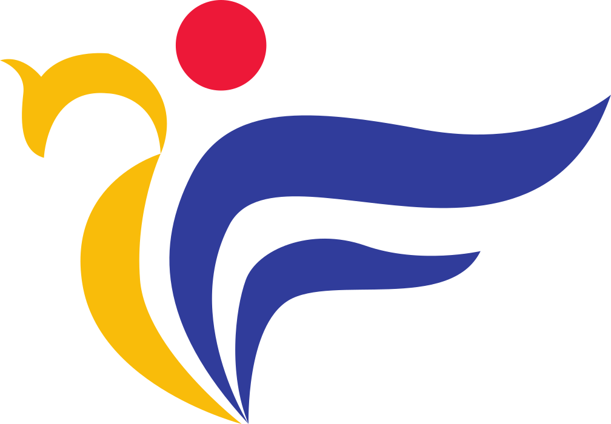
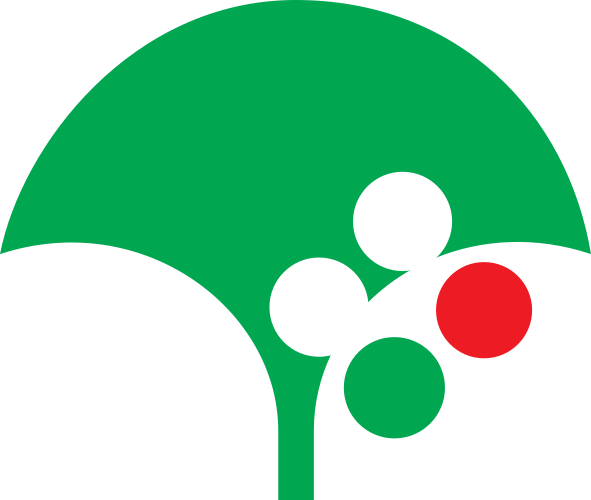
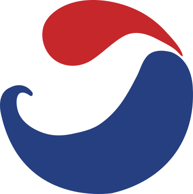
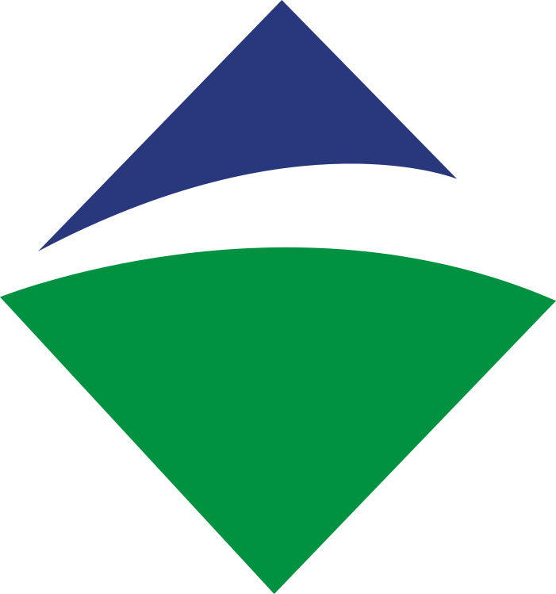
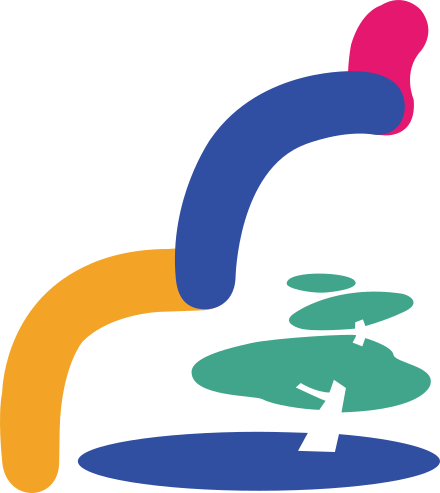
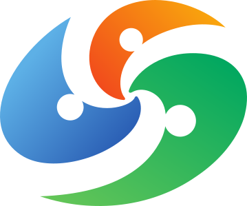
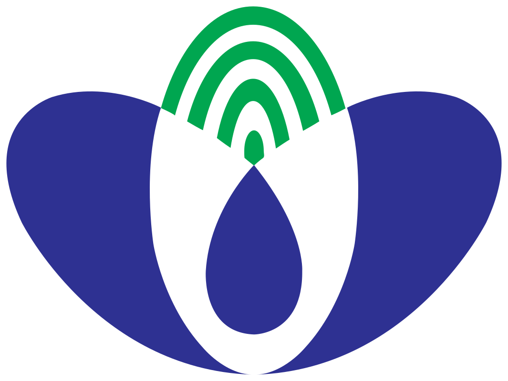
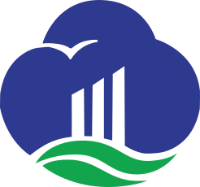
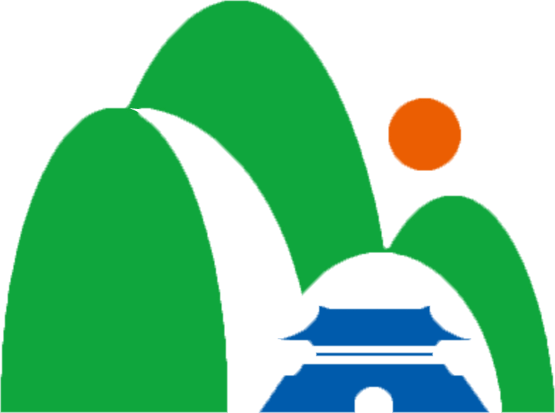

도시의 철학을 디자인하다.
도시에 질문하고, 정체성을 설계합니다.

도시의 철학을 디자인하다.
도시에 질문하고, 정체성을 설계합니다.
Projects with accumulated experience
7년간 105개 이상의 프로젝트를 리드하며 경험을 축적 해왔습니다.
도시브랜드연구소는 각 도시의 고유한 문화와 역사를 반영한 브랜드 전략을 수립하여 방문객 모두에게 사랑 받는 도시 이미지를 구축 했습니다.
SMM & COMMUNITY MANAGEMENT
CREATIVE STRATEGY
INFLUENCERMARKETING
The essence of City Branding
도시의 고유한 정체성과 매력을 디자인
도시 고유의 정체성을 시각적으로 구현하고, 도시에 대한 자부심과 공감이 스며드는 브랜드 경험을 설계합니다.
프로젝트 더보기 +
문경감홍사과체
FONT DESIGN
레드로드
FONT + BRAND CUNSULTING
해월마을
LOGO + BRAND CUNSULTING
신동엽글씨체
FONT DESIGN
정림사지체
FONT DESIGN
The origin of Custom Design Service
도시의 니즈에 기반한 맞춤형 디자인의 확장
2017년부터 도시 정체성, 시각 언어, 커뮤니케이션 방식에 대한 디자인 연구를 바탕으로 로고, 폰트, 컨설팅 영역에서 도시별 특성과 맥락을 반영한 맞춤형 디자인 솔루션을 제공하고 있습니다.
Logo Design
도시의 정체성을 시각적으로 구현한 맞춤형 로고 디자인
Font Design
도시의 이야기와 목소리를 담은 맞춤형 폰트 디자인
Brand Consulting
도시의 고유한 가치를 극대화하는 맞춤형 학술연구 및 전략 컨설팅
도시 고유성을 드러내고, 지역 매력을 빛내는 일은, 저에게 매우 의미있는 일입니다.
도시브랜드연구소는 단순한 디자인을 넘어, 지역 고유의 이야기와 가치를 담아 브랜드를 창조합니다. 이를 통해 브랜드 이미지 강화와 지역 주민과 방문객 모두가 사랑하는 공간을 만들어 갑니다.
Cities that worked together on the project
도시브랜드연구소와 함께한 도시

부여군

영주시

통영시

논산시
마포구

영월군

창원시

무주군

군산시

문경시